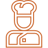

<ion-app>
  <ion-split-pane contentId="main-content">
    <div class="status-bar-fixed"></div>
    <ion-menu side="end" contentId="main-content" type="overlay">
      <ion-content>
        <ion-list class="menu-list">
          <ion-list-header slots="start" class="side-menu-header">
            
            
            
            <ion-avatar *ngIf="loggedInUser && loggedInUser.isChef && chefDetail && chefDetail.profilePicture" class="header-avatar-margin-vertical">
              
            </ion-avatar>
            <ion-grid class="ion-margin-start">
              <ion-row>
                <ion-label *ngIf="!loggedInUser || loggedInUser.id < 0" color="secondary" class="menu-header-greetings">{{ 'home.menu.greeting' | translate }}</ion-label>
                <ion-label *ngIf="loggedInUser" color="secondary" class="menu-header-greetings">
                  {{ getUserName() }}
                </ion-label>
              </ion-row>
              <ion-row *ngIf="!loggedInUser">
                <ion-label color="secondary" class="menu-header-comments">{{ 'home.menu.subtitle' | translate }}</ion-label>
              </ion-row>
            </ion-grid>
          </ion-list-header>
          <ion-grid class="menu-toggle-group">
            <ion-menu-toggle auto-hide="false" *ngIf="!loggedInUser || loggedInUser.id < 0">
              <ion-item routerDirection="root" routerLink="/auth/login" lines="none" detail="false" routerLinkActive="selected">
                
                <ion-label class="ion-margin-start menu-label">{{ 'home.menu.login' | translate }}</ion-label>
              </ion-item>
            </ion-menu-toggle>
            <ion-menu-toggle auto-hide="false" *ngIf="!loggedInUser || loggedInUser.id < 0">
              <ion-item routerDirection="root" routerLink="/auth/signup" lines="none" detail="false" routerLinkActive="selected">
                
                <ion-label class="ion-margin-start menu-label">{{ 'home.menu.signup' | translate }}</ion-label>
              </ion-item>
            </ion-menu-toggle>
            <ion-menu-toggle auto-hide="false" *ngIf="loggedInUser">
              <ion-item routerDirection="root" routerLink="/public/account" lines="none" detail="false" routerLinkActive="selected">
                
                <ion-label class="ion-margin-start menu-label">{{ 'home.menu.myAccount' | translate }}</ion-label>
              </ion-item>
            </ion-menu-toggle>
            <ion-menu-toggle auto-hide="false">
              <ion-item routerDirection="root" routerLink="/public/order" lines="none" detail="false" routerLinkActive="selected">
                
                <ion-label class="ion-margin-start menu-label">{{ 'home.menu.myOrders' | translate }}</ion-label>
              </ion-item>
            </ion-menu-toggle>
            <ion-menu-toggle auto-hide="false">
              <ion-item lines="none" detail="false">
                
                <ion-label class="ion-margin-start menu-label">{{ 'home.menu.inbox' | translate }}</ion-label>
              </ion-item>
            </ion-menu-toggle>
            <ion-menu-toggle auto-hide="false" *ngIf="loggedInUser && !loggedInUser.isChef">
              <ion-item routerDirection="root" routerLink="/public/chef" lines="none" detail="false" routerLinkActive="selected">
                
                <ion-label class="ion-margin-start menu-label">{{ 'home.menu.becomeAHomeChef' | translate }}</ion-label>
              </ion-item>
            </ion-menu-toggle>
            <ion-menu-toggle auto-hide="false" *ngIf="loggedInUser && loggedInUser.isChef">
              <ion-item routerDirection="root" routerLink="/public/chef/dashboard" lines="none" detail="false" routerLinkActive="selected">
                
                <ion-label class="ion-margin-start menu-label">{{ 'home.menu.chefDashboard' | translate }}</ion-label>
              </ion-item>
            </ion-menu-toggle>
            <ion-menu-toggle auto-hide="false" [ngStyle]="{visibility: (loggedInUser && loggedInUser.id > 0) ? 'visible' : 'hidden' }">
              <!-- <ion-item routerDirection="root" routerLink="/public/share" lines="none" lines="none" detailIcon="chevron-down-outline" detail="true" routerLinkActive="selected">
                
                <ion-label class="ion-margin-start menu-label">{{ 'home.menu.shareAndEarn' | translate }}</ion-label>
              </ion-item> -->
              <ion-item lines="none" lines="none" detailIcon="chevron-down-outline" detail="true">
                
                <ion-label class="ion-margin-start menu-label">{{ 'home.menu.shareAndEarn' | translate }}</ion-label>
              </ion-item>
            </ion-menu-toggle>
            <ion-menu-toggle auto-hide="false">
              <!-- <ion-item routerDirection="root" routerLink="/public/help" lines="none" detailIcon="chevron-down-outline" detail="true" routerLinkActive="selected">
                
                <ion-label class="ion-margin-start menu-label">{{ 'home.menu.needHelp' | translate }}</ion-label>
              </ion-item> -->
              <ion-item lines="none" detailIcon="chevron-down-outline" detail="true">
                
                <ion-label class="ion-margin-start menu-label">{{ 'home.menu.needHelp' | translate }}</ion-label>
              </ion-item>
            </ion-menu-toggle>
            <ion-menu-toggle auto-hide="false">
              <!-- <ion-item lines="none" detail="false" class="language-item" (click)="onClickMenuLanguageButton($event)"> -->
              <ion-item lines="none" detail="false" class="language-item">
                
                <ion-label class="ion-margin-start menu-label">{{ currentLanguage | translate }}</ion-label>
              </ion-item>
            </ion-menu-toggle>
            <ion-menu-toggle auto-hide="false" *ngIf="loggedInUser && loggedInUser.id > 0" class="mt-auto imb-50">
              <ion-item lines="none" detail="false" (click)="onLogout()">
                
                <ion-label class="ion-margin-start menu-label">{{ 'home.menu.logout' | translate }}</ion-label>
              </ion-item>
            </ion-menu-toggle>
          </ion-grid>
        </ion-list>
      </ion-content>
    </ion-menu>
    <ion-router-outlet id="main-content"></ion-router-outlet>
  </ion-split-pane>
</ion-app>
